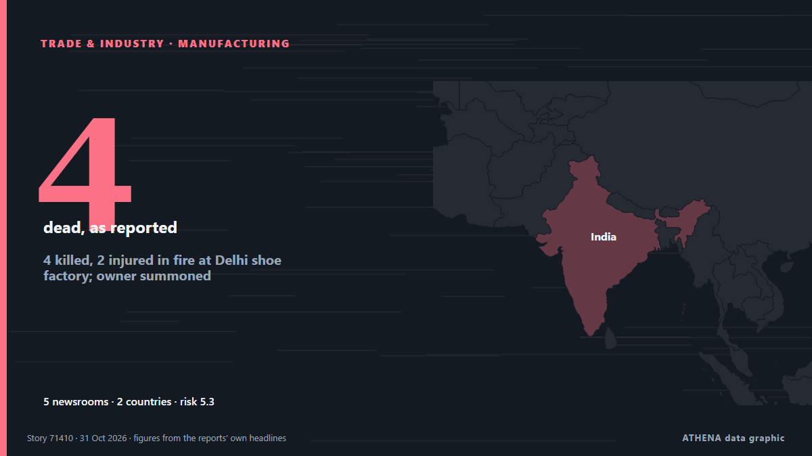

التصنيع
| 18 أكتوبر | 0 |
|---|---|
| 19 أكتوبر | 0 |
| 20 أكتوبر | 0 |
| 21 أكتوبر | 0 |
| 22 أكتوبر | 0 |
| 23 أكتوبر | 0 |
| 24 أكتوبر | 1 |
| 25 أكتوبر | 1 |
| 26 أكتوبر | 2 |
| 27 أكتوبر | 0 |
| 28 أكتوبر | 2 |
| 29 أكتوبر | 0 |
| 30 أكتوبر | 2 |
| 31 أكتوبر | 1 |
تُعرض العناوين بالإنجليزية كما نُشرت.

4 killed, 2 injured in fire at Delhi shoe factory; owner summoned
A fire broke out at a shoe manufacturing factory in Delhi's Mangolpuri Industrial Area, which killed four individuals. من Times of India
3.4الأهمية
5.2الخطر · متزايد
72%الثقة
Colonial West still trying to exploit Africa’s resources: Putin
The Russia-Africa Summit aims to push for Russian political and economic influence on Africa. من SABC News
Volkswagen Looks To Export 300,000 Vehicles From China By 2030
Volkswagen said that for the first time it will also export technology developed in Hefei to other parts of Asia, the Middle East and South America, but not Europe for now. من Channels TV
Obama mocks Trump’s government-wide response to Cheesecake Factory remark ahead of US midterms
Former US president Barack Obama on Wednesday mocked President Donald Trump for mobilising a government-wide response to his earlier remark that Trump had “got the White House looking like Saddam… من Dawn